光与色
景别和构图决定观众看哪里，光和颜色决定观众看的时候是什么心情。这一章先讲光的四个旋钮，再讲颜色怎么选、怎么调。
光：四个旋钮
你觉得一个画面“有质感”“高级”“像电影”，八成是因为光。光听起来专业，其实能调的只有四样：软硬、明暗比例、方向、颜色。学会这四个词，你就能说清九成的布光需求。即使片子里没有实拍，你用 AI 生成图片、让它渲染 3D 画面、甚至给一张卡片加阴影，用的也是这四个词。
软和硬
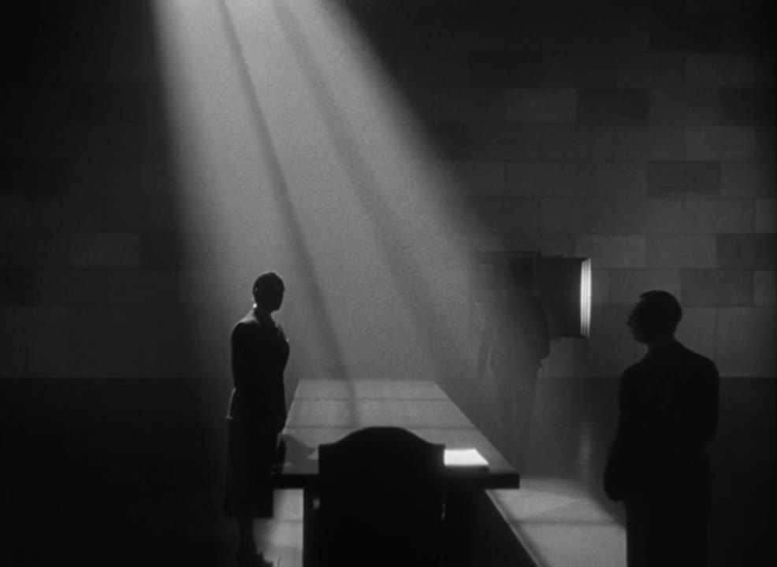
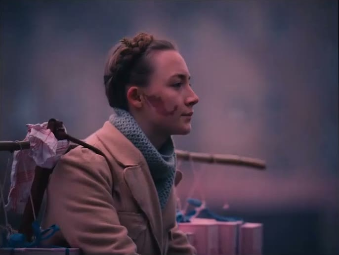
判断软硬只看一个地方：影子的边缘。边缘像刀切的是硬光，边缘糊成一片的是软光。大多数“好看的人像”用软光，大多数“有戏剧张力的画面”用硬光。
高调和低调
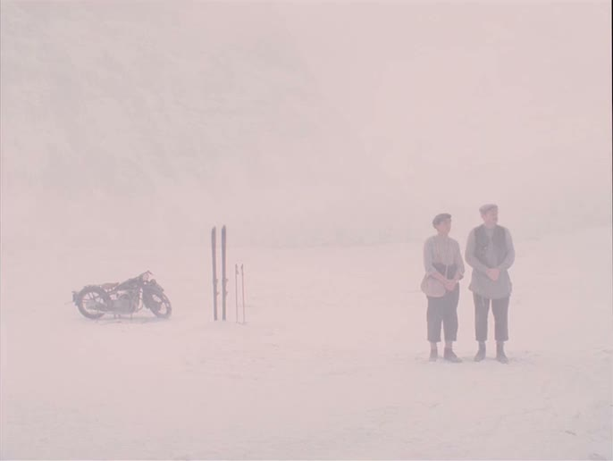
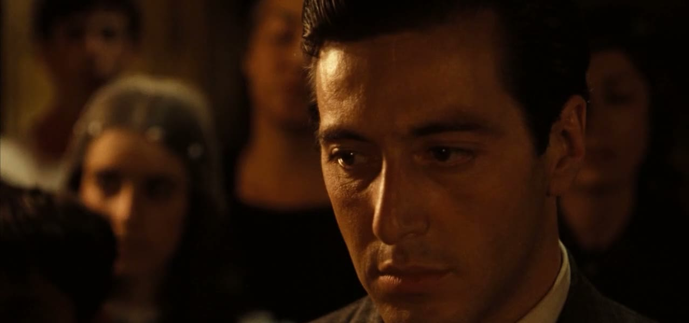
这里的“调”说的是亮和暗的比例，行内叫光比contrast ratio。亮部和暗部差得越多，反差越大，画面越“硬朗”“有戏”；差得越少，画面越“平”“柔”。短视频里常见的“平光”，就是脸上没有任何明暗变化，安全，但没有立体感。
方向
光从哪个方向打到主体上，决定了脸和物体的立体感。记五个方向就够。
| 方向 | 看起来 | 感觉 |
|---|---|---|
| 顺光 front light | 光从摄影机方向来，脸上没有影子 | 清楚、扁平、证件照。美颜直播的环形灯 |
| 侧光 side light | 半边脸亮，半边脸暗 | 立体、有性格、有内心戏 |
| 逆光 backlight | 光在主体背后，主体边缘有一圈亮边，正面偏暗 | 梦幻、神圣、剪影；把人从背景里“勾”出来 |
| 顶光 top light | 光从正上方来，眼窝、鼻下、下巴都是影子 | 压抑、阴沉、审讯 |
| 底光 under light | 光从下往上，影子反着长 | 诡异、恐怖。手电筒放下巴底下讲鬼故事 |
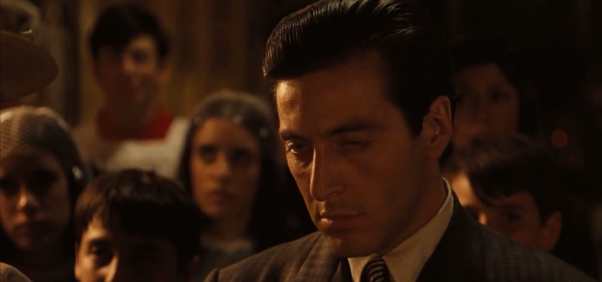
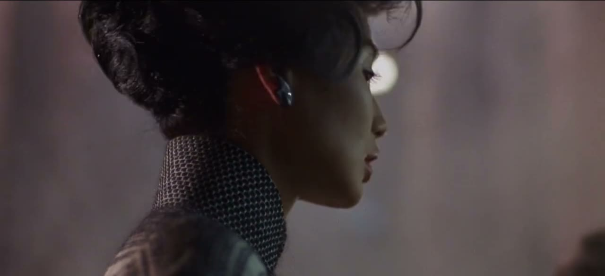

影视里最经典的布光叫三点布光three-point lighting：一盏主光在侧前方，负责照亮和塑形；一盏弱一些的辅光在另一侧，把主光造成的阴影提亮一点；一盏轮廓光在侧后方，给头发和肩膀描边，让人和背景分开。采访、口播、产品拍摄，基本都是这个结构的变体。
画面里看得见的光源
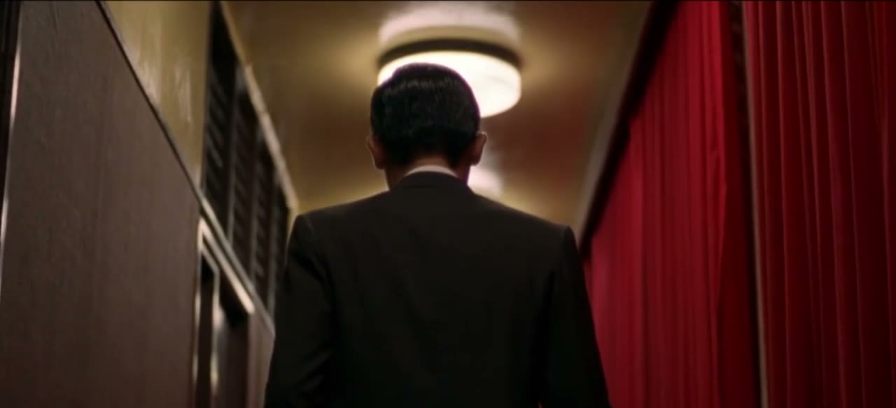
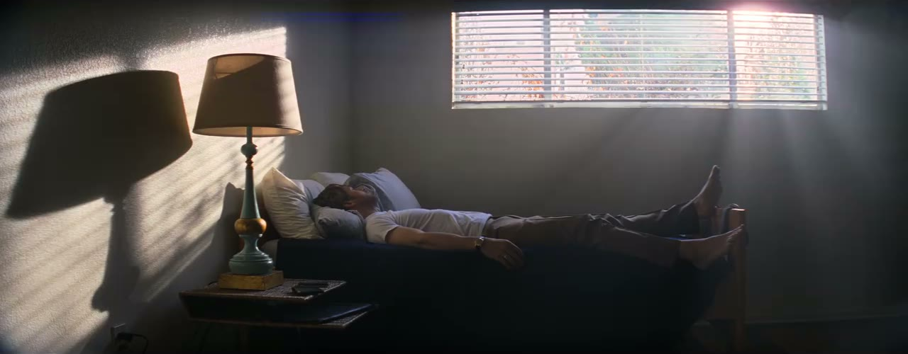
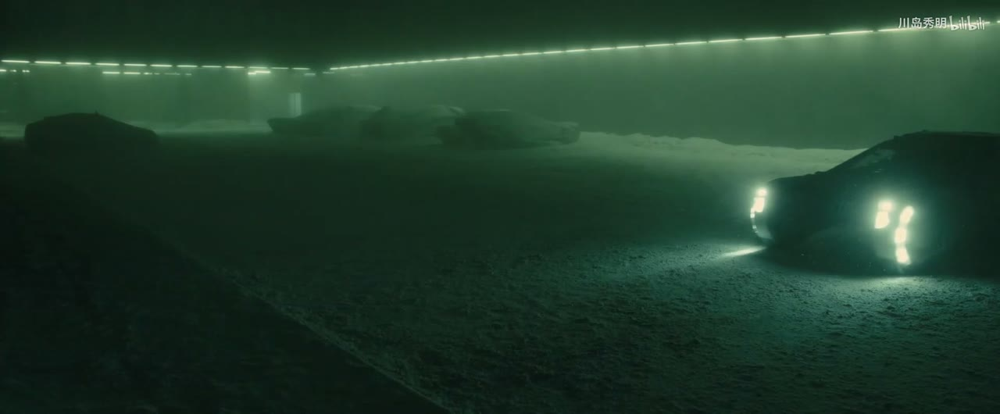
怎么对 AI 说光
三种场合会用到。一是让它生成图片或视频素材，光的描述直接进提示词。二是让它从一堆素材里挑片，或者判断哪一条拍得好。三是做图形动效时，阴影、高光、发光这些“假的光”也要遵守同一套逻辑：全片的光从同一个方向来。
颜色：先认三个属性
任何一个颜色都可以用三个数来描述。调色、配色、挑颜色，动的都是这三个数。
| 属性 | 是什么 | 拧它会怎样 |
|---|---|---|
| 色相 hue | 红、橙、黄、绿、青、蓝、紫，色环上的位置 | 决定“是什么颜色”。暖色（红橙黄）靠近、兴奋；冷色（青蓝）后退、冷静 |
| 饱和度 saturation | 鲜艳程度。拉到最低就是灰色 | 高饱和：活泼、年轻、廉价都有可能。低饱和：克制、成熟、压抑 |
| 明度 lightness / value | 亮还是暗 | 决定画面的轻重。人眼对明度差最敏感，所以字和底的明度一定要拉开 |
一个马上能用的判断：新手和 AI 默认生成的画面，颜色往往是“高饱和、中等明度”的，也就是又艳又闷。把饱和度整体降两成，把明度的对比拉开（亮的更亮、暗的更暗），画面立刻会成熟一截。
配色：一部片子只用几个颜色
好看的片子颜色都很少。下面每张图下面的色条，是从这一帧里直接提取出来的主要颜色。你会看到它们几乎都只在色环上占了很小的一段，或者只用了两段。
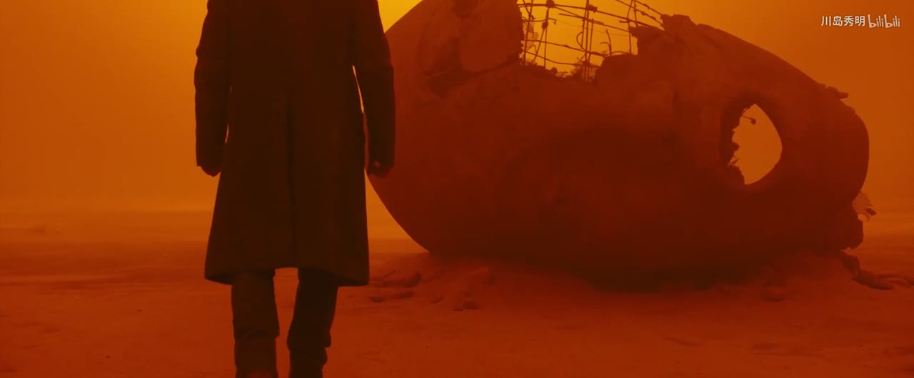
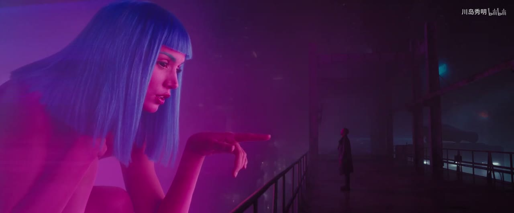

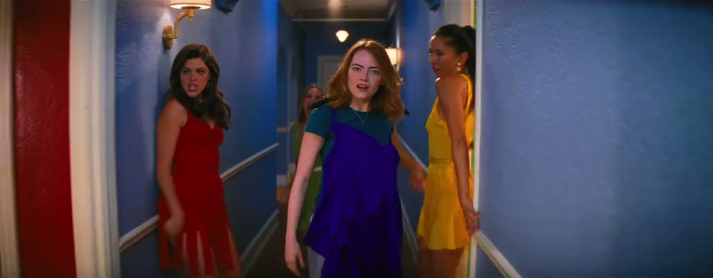
| 配色方式 | 怎么选 | 感觉 | 风险 |
|---|---|---|---|
| 单色 monochromatic | 一个色相，只变深浅 | 统一、极简、风格强烈 | 容易单调，靠明暗对比撑 |
| 邻近色 analogous | 色环上挨着的两三个 | 和谐、柔和 | 缺少焦点，需要一个明度很高的点 |
| 互补色 complementary | 色环上相对的两个 | 对比强、主体突出 | 两个颜色面积一样大会打架。一个做大面积的底，一个做小面积的点 |
| 中性色加一个强调色 | 黑白灰米，加一个鲜艳的颜色 | 干净、现代、重点明确 | 几乎没有。拿不准就用它 |
最后一行是给你的默认答案。做讲解片、产品片，选一个接近白或接近黑的底色，一个和它对比足够的字色，再加一个强调色，只用在每一屏最重要的那个东西上。行内有个“60-30-10”的经验比例：六成底色，三成辅助色，一成强调色。
颜色可以是一个导演的签名
有些导演光看颜色就认得出来，因为他们把配色当成了固定的规则。
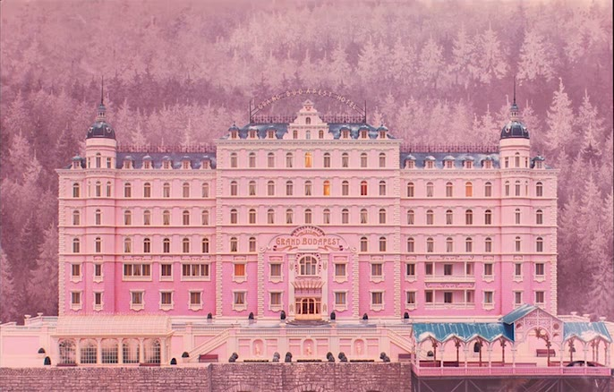
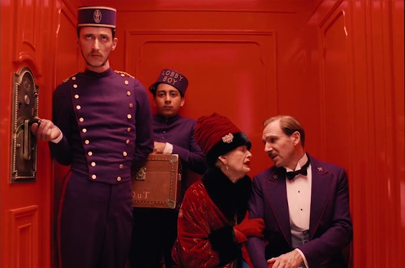
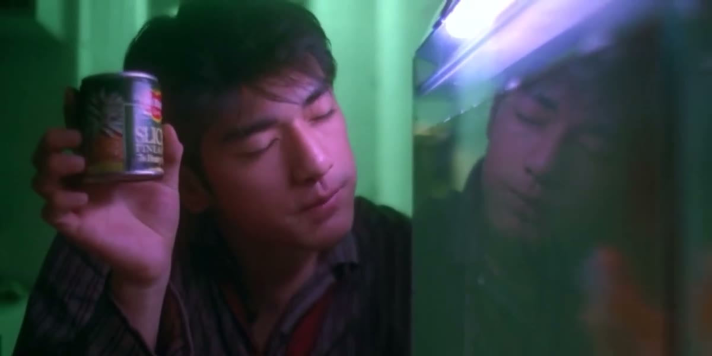
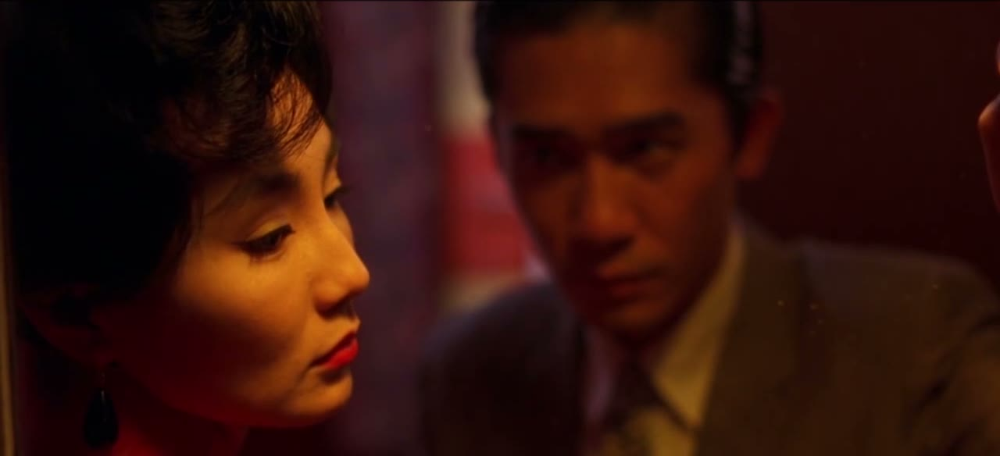
暖和冷
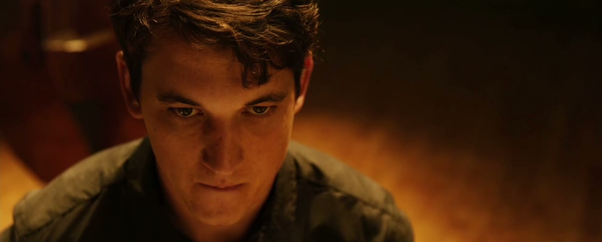
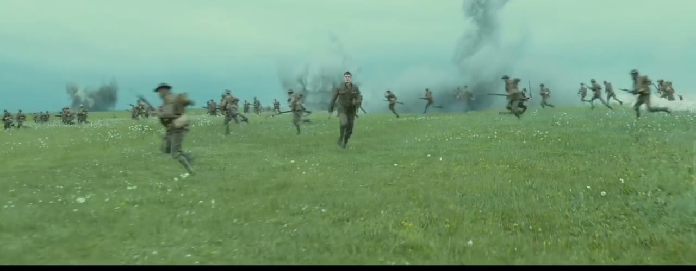
色温color temperature是说光本身偏黄还是偏蓝。蜡烛、钨丝灯、夕阳偏暖（黄橙）；阴天、阴影里、荧光屏偏冷（蓝青）。一个很好用的手法是冷暖对比：背景冷、人物暖，人会像被一小团火照着一样突出来。上面《银翼杀手 2049》的雾里那两盏车灯，《疯狂的麦克斯》的蓝天黄沙，都是这个道理。
调色：给整部片子一个“看法”
拍出来或生成出来的原始画面，颜色通常是“正确”但没有性格的。调色color grading是后期统一地改变全片颜色的过程，它决定这部片子是用什么“心情”看世界的。分两步：先校色（把每个镜头的曝光、白平衡调到一致、正常），再风格化（整体推向某种色调）。
下面是同一帧画面，套上七种常见的调色方向。点着看，注意下面的说明里用了哪些词。
原片：《爱乐之城》(2016) 开场。演示里的色调是用网页滤镜模拟的，只为示意方向。
调色时能拧的旋钮，名字比较固定：
| 旋钮 | 管什么 | 常见说法 |
|---|---|---|
| 曝光 / 亮度 | 整体亮暗 | “整体压暗半档”“提亮一点” |
| 对比度 | 亮部和暗部拉开多少 | “加对比，让画面更硬”“降对比，柔一点” |
| 高光 / 阴影 / 黑位 | 分别调最亮处、暗处、最黑处 | “把高光压回来，窗外不要死白”“黑位抬起来一点，做褪色感” |
| 白平衡 / 色温 | 整体偏黄还是偏蓝 | “色温往暖走一点”“校正偏绿” |
| 饱和度 | 整体鲜艳程度 | “降两成饱和”“只提高肤色的饱和” |
| 分离色调 split toning | 给暗部和亮部分别染不同的颜色 | “暗部偏青，高光偏橙” |
| LUT | 一个打包好的调色预设，一键套上去 | “套一个柯达胶片的 LUT，强度 60%” |
| 暗角 vignette | 画面四角压暗 | “加一点暗角，把视线收到中间” |
| 颗粒 grain | 叠一层胶片噪点 | “加一层细的胶片颗粒，强度很轻” |
调色里有一条红线：肤色。不管整体色调多风格化，人的皮肤看起来要像皮肤。肤色发绿、发灰、发紫，观众会立刻觉得“病了”或“假”。给 AI 的调色要求后面加一句“保护肤色，肤色保持自然”。
不同来源的素材怎么统一
混剪和讲解片常常把不同来源的素材放在一起：手机拍的、网上下的、AI 生成的、录屏的。它们的颜色、清晰度、质感全都不一样，接在一起会像拼盘。让 AI 做三件事就能统一大半：
- 全部校到同一个曝光和白平衡基准。
- 套同一个风格化调色，或者叠同一层很淡的颜色。
- 叠同一层颗粒或纹理。颗粒像一层胶水，能把清晰度不同的素材粘成一体。
还有一招更彻底：把所有外来素材都装进同一种“容器”里，比如统一的白边相纸、同一款手机外框、同一种撕纸边缘。容器统一了，里面的东西再杂，观众也觉得是一套。
给图形和文字配色的四条规矩
做动效和图文画面时，颜色的问题比实拍更突出，因为每一个色值都是你（或 AI）选的。
- 不用纯黑和纯白。纯黑 #000 配纯白 #FFF 反差太硬，看久了累。黑用 #1A1A1A 一带，白用略带暖或带冷的 #F5F4F0 一带。
- 字和底的明度差要够。眯起眼睛看，字要仍然清楚地浮在底上。浅灰字压白底、深蓝字压黑底，是可读性的头号杀手。
- 强调色只有一个，并且省着用。它出现的地方就是在喊“看这里”。一屏喊三次，就没人听了。
- 颜色要有固定的意思。橙色代表“重点”，就全片都代表重点；绿色代表“正确”，红色代表“错误”，就不要拿红色去做装饰。
片例截图与片段仅用于学习与评述，版权归原作者与出品方所有，出处见片单与出处。